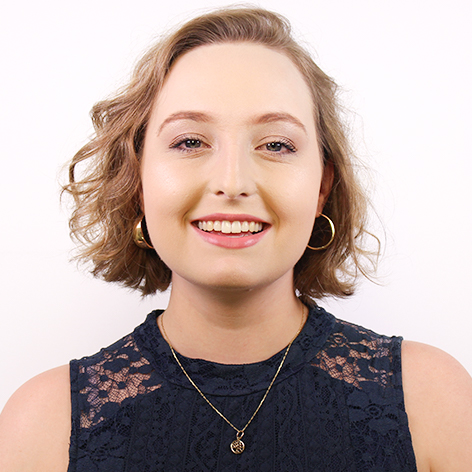

About Me

Ich habe einen Abschluss in Werbung von der Universidade Presbiteriana Mackenzie,
Brasilien. Zurzeit studiere ich an der Hochschule Furtwangen im Masterstudiengang
Interaktives Mediendesign.
Ich habe in kleinen Werbeagenturen gearbeitet und Beiträge für digitale Medien erstellt.
Ich habe ein Praktikum als Webdesigner bei Record TV absolviert und bin dann in das
Projektteam gewechselt, wo ich als UI/UX-Designer an großen Projekten mit allen
Multiplattformbereichen des Nachrichtenportals R7.com gearbeitet habe.
Ich habe Erfahrung in den Bereichen User Research, Character Creation, Wireframe, Layout,
Style Guide und Prototyping. Außerdem verfüge ich über fortgeschrittene Kenntnisse in
Tools wie Adobe Package (Photoshop, Illustrator, Indesign und Adobe XD), sowohl auf
Windows- als auch auf Mac-Systemen. Ich arbeite auch mit den Programmen Sketch,
Axure und Zeplin.